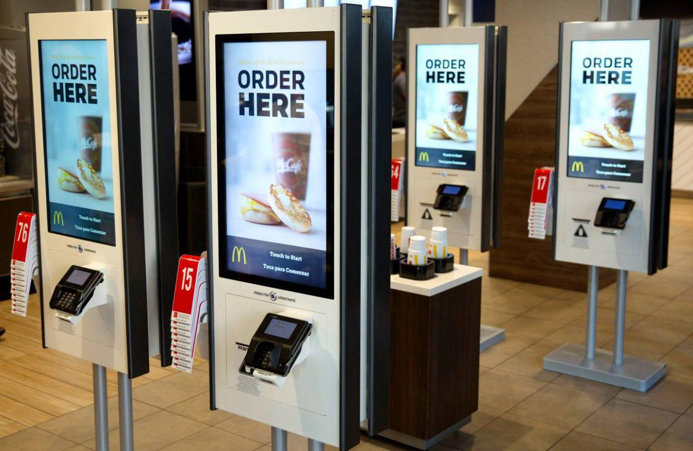

Sepember 8, 2022
Here's why you don't have to...
From the COVID-19 layoffs to the ‘nobody wants to work anymore’ signs, the restaurant worker shortage is still in the news, so I decided to look at the data from the Bureau of Labor Statistics to see what was going on.
I worked in the restaurant industry for several years (including during the pandemic), and when we weren’t sending out hot plates of food or packing up stacks of takeout orders, you might’ve caught us talking about the restaurant worker shortage. The typical remarks included:
“It’s not a worker shortage, it’s a wage shortage.”
“People were starting to leave the industry anyway.”
“They found other jobs, and aren’t coming back”.
The true reason might be up for debate; the answer most likely being ‘D’ — all of the above. The question I want to answer is will they be coming back?
Where we were, where we are, and what could have been.
Depending on the news source you’re reading, it varies how many workers are missing from the industry, so I want to be up front with the data I’m using. The data comes from the Bureau of Labor Statistics (BLS) ‘National Employment, Hours, and Earnings’ survey with North American Industry Classification (NAICS) code 7225 — ‘Restaurants and Other Eating Places’. The restaurant workers that we’ll be looking at are ‘production and nonsupervisory employees’.
From the BLS website:
PRODUCTION AND RELATED EMPLOYEES
This category includes working supervisors and all nonsupervisory employees (including group leaders and trainees) engaged in fabricating, processing, assembling, inspecting, receiving, storing, handling, packing, warehousing, shipping, trucking, hauling, maintenance, repair, janitorial, guard services, product development, auxiliary production for plant's own use (for example, power plant), recordkeeping, and other services closely associated with the described production operations.
NONSUPERVISORY EMPLOYEES
These are employees (not above the working-supervisor level) such as office and clerical employees, repairers, salespersons, operators, drivers, physicians, lawyers, accountants, nurses, social employees, research aides, teachers, drafters, photographers, beauticians, musicians, restaurant employees, custodial employees, attendants, line installers and repairers, laborers, janitors, guards, and other employees at similar occupational levels whose services are closely associated with those of the employees listed.
Bureau of Labor Statistics Technical Notes for the Current Employment Statistics Survey
Below is a chart showing the number of restaurant employees since 2013. I used pre-pandemic data to project the number of workers there would be today.

The data shows that the number of restaurant employees is around 930 thousand less than it should be due to the pandemic. However, even though the economy may have ‘bounced-back’ from the pandemic recession, it certainly stunted its growth. Restaurant employee numbers are highly correlated with the total number of private sector employees (all employees not working in farms or the government.) Private sector employee numbers are almost 5 million short of their projected value, although they have surpassed their pre-pandemic level; restaurant employees have not.

The shortage isn’t as bad as it seems.
Yes, there are less restaurant employees than there used to be, but the extent of the loss is overblown by the news cycle. The data shows that the number of restaurant employees is continually hovering around 5.97% less than expected, given the number of private sector employees; indicating the restaurant shortage might be here to stay.

The shortage is overblown because the percentage of workers employed in restaurants is down 5.86% from pre-pandemic levels, but is down less than one percent from 2013 levels — the industry has seen this before. That percentage gradually rose overtime, but the industry very quickly experienced a lot of changes.
Maybe the industry needs less workers…
The pandemic accelerated industries toward more efficient practices and technologies; many that were widely available but underutilized — like remote work and video conferencing. The restaurant industry was no different. In order to operate under lockdowns and social distancing measures restaurants adopted online ordering, QR code menus, and contracts with food delivery companies. Many restaurants invested heavily in those systems and continue to use them. Another interesting graph shows the average number of workers per restaurant.

Restaurants today, on average, are operating with about 1.6 less workers than they were before the pandemic. Automation has been coming for restaurant jobs in the form of online ordering apps and contactless kiosks now in use by many of the larger chains, while smaller restaurants have chosen to shorten their hours to peak times. Also adding more than 84% of consumers say they are eating out less often according to this survey, it’s likely that restaurants need less people to operate today.
With all these factors that limit the number of employees a restaurant needs, we can ask a different question: is the restaurant worker shortage something new? A quick search for pre-pandemic restaurant shortage articles does not leave one wanting — like this one from the New York Times (from 2018 when restaurant employment was fairly high). For an industry with a notoriously high turnover rate, lower than average wages, and few benefits, staffing has always been an issue, and that’s probably not going to change anytime soon. If restaurants are able to operate more efficiently with less employees, they could funnel some of those savings into staff retention measures that could cut down the turnover rate. However, it will still be a while before restaurants see returns on their operational investments, especially with diners dwindling from inflation. So, for the most part, it looks like the restaurant worker shortage is here to stay, but it’s not that bad and definitely isn’t new.
∎